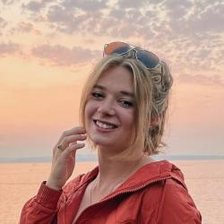
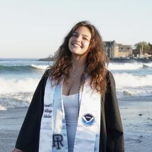

Passive Acoustics Branch Members
Group photo at top + org chart
Sofie Van Parijs, Ph.D.
she/her/hers
Chief, Passive Acoustics Branch
Northeast Fisheries Science Center
Office: (508) 495-2119
Email: sofie.vanparijs@noaa.gov
Sofie has a BA and MA in Natural Science from Cambridge University, UK and a PhD in Zoology from Aberdeen University, UK. She worked as a postdoctoral scientist at James Cook University, Australia, the Norwegian Polar Institute in Norway, and Cornell University, USA before starting the passive acoustic research group (now the Passive Acoustics Branch) here at the Northeast Fisheries Science Center in 2006.
Relevant links:
ResearchGate
ORCID
Renea Briner
she/her/hers
Acoustician (Affiliate)
Northeast Fisheries Science Center
Email: renea.briner@noaa.gov
Renea earned degrees in Marine Science (BS) and Psychology (BA) from the University of Delaware in 2023. She joined the Passive Acoustic Branch in 2023 to contribute to the analysis of real-time and archival passive acoustic data collected throughout the western North Atlantic for the presence of baleen whale calls. Previously, Renea has worked on acoustic projects related to sperm whale population demographics in the Gulf of Mexico and odontocete group composition in the Hawaiian Islands.
Relevant links:
LinkedIn
Kate Choate, MSc
she/her/hers
Research Biologist
Northeast Fisheries Science Center
Office: (508) 603-6154
Email: kate.choate@noaa.gov
Kate received her BA in Environmental Studies from Stonehill College in 2009 and completed her Master of Science in Marine Biology at University of Massachusetts Dartmouth in 2014. Her research there focused on zooplankton phenology in New Bedford Harbor in response to warming spring sea surface temperature, analyzing 25 years worth of zooplankton samples in the process. In February 2020, she joined the NEFSC, where she assists both the passive acoustic and the turtle ecology research groups.
Michael Cranston Ryan

Software Developer
Northeast Fisheries Science Center
Cell: (508) 617-3738
Email: michael.c.ryan@noaa.gov
Mike joined the Passive Acoustics Branch in 2024 working as a software and program developer. He is an engineer, husband and dad with a trove of interests, hobbies and projects. In addition to his love of coding, he enjoys music, travel, sports, science, cooking and audiobooks to name a few.
Relevant Links:
Github
Genevieve Davis, Ph.D.
she/her/hers
Research Acoustician
Northeast Fisheries Science Center
Office: (508) 495-2325
Email: genevieve.davis@noaa.gov
Genevieve has a BS from the State University of New York at Binghamton and a PhD from the University of Massachusetts Boston. She started working with the Passive Acoustics Branch as a NOAA Hollings scholar in 2010, working on North Atlantic right whale calling behavior across seasons. She then returned to work with the Passive Acoustics Branch as a research biologist focusing on baleen whale acoustics, distribution, and educational outreach. She now leads the baleen whale passive acoustic projects.
Relevant Links:
ResearchGate
ORCID
LinkedIn
Annamaria DeAngelis, MRes
Research Acoustician
Northeast Fisheries Science Center
Office: (508) 495-2105
Email: annamaria.deangelis@noaa.gov
Annamaria DeAngelis (formerly Izzi) has a BS in Marine Biology from the University of Rhode Island and a MRes in Marine Mammal Science from the University of St Andrews, Scotland. She has worked as a research analyst at Cornell’s Bioacoustics Research Program (now Center for Conservation Bioacoustics) and interned at the Naval Undersea Warfare Center Division Newport, RI researching beaked whales, before joining the passive acoustic research group in 2014. Her focus is on the detection, classification, and localization of various odontocete species from both bottom mounted and towed array platforms, which comprises of beaked whale, sperm whale, Kogia, harbor porpoise, and delphinid species projects.
For a list of papers Annamaria has contributed to, please visit OrcID as well as the Passive Acoustics Research Group’s list of publications.
Catherine Dodge
she/her/hers
Acoustician (Affiliate)
Northeast Fisheries Science Center
Office: (508) 955-0102
Email: catherine.dodge@noaa.gov
Catherine Dodge works as an acoustician for the Passive Acoustics Branch at the NOAA Northeast Fisheries Science Center. She previously worked at the Northeast Fisheries Science Center, Woods Hole Lab, as a Front Desk Receptionist and for the Fisheries Sampling Branch- Observer Program as an Administrative Clerk and Security Assistant.
Sophie Ferguson
she/her/hers
Acoustician (Affiliate)
Northeast Fisheries Science Center
Email: sophie.ferguson@noaa.gov
Sophie received her B.S. in marine science and biology from the University of Miami. She joined the Passive Acoustics Branch in 2023 where she focuses on the occurrence and distribution of sperm whales in the Atlantic Ocean. Previously, she worked on passive acoustic monitoring projects in St. John USVI coral reef soundscapes as a guest student at WHOI.
Relevant links:
LinkedIn
Rhett Finley
he/him/his
Fishery Biologist Junior III (Affiliate)
Northeast Fisheries Science Center
Office: (918) 704-1936
Email: rhett.finley@noaa.gov
Rhett graduated from Texas A&M University at Galveston with a BS in Marine Biology in 2018. Before joining the NEFSC’s Passive Acoustics Branch in 2023, he obtained a range of experiences relating to the research and conservation of protected species, particularly with marine mammals. Some of these experiences have involved protected species observing on wind farm lease areas in the Northwest Atlantic, serving as a field research assistant on bottlenose dolphin social dynamics for the Dolphin Alliance Project in Shark Bay, Australia, conducting Northern elephant seal censuses on their breeding grounds in the Farallon Islands, and curating aerial photographic data of marine wildlife from the Atlantic Marine Assessment Program for Protected Species (AMAPPS) for an automatic image detector. He most recently was a part of a right whale acoustic density estimation project with the Bioacoustics and Behavioral Ecology Lab (BABEL) at Syracuse University. Now he is currently responsible for coordinating field work, leading hydrophone deployment operations, and assisting with baleen whale acoustic analysis.
Relevant links:
LinkedIn
Isabella Garfield
she/her/hers
Acoustician (Affiliate)
Northeast Fisheries Science Center
Email isabella.garfield@noaa.gov
Bella Garfield received a Marine biology B.S. from the University of California Santa Cruz. Her research experience there included Hawaiian monk seal conservation, northern elephant seal biology, biological thermal imagery collection via drones, and coho salmon stress indicators in otoliths. Her senior thesis project analyzes fine-scale philopatry within the Año Nuevo northern elephant seal colony. She conducted her 2023 NOAA Hollings Scholarship project with NEFSC’s Passive Acoustics Branch characterizing the soundscape of Australia’s Southwest marine park. After graduation, Bella worked as a full time field technician collecting avian acoustic data in the Peruvian Amazon. She returned to the passive acoustic branch in 2024 to help build the lab’s regional and national manuals.
Rochelle Gordon
she/her/hers
Acoustician (Affiliate)
Northeast Fisheries Science Center
Office: (508) 455-5942
Email: rochelle.gordon@noaa.gov
Rochelle graduated from the University of Maine with a BS in marine science in May of 2019. While attending UMaine, Rochelle assisted on a study examining large whale vocalizations and movement in the Gulf of Maine using passive acoustic monitoring. She primarily focused on the critically endangered North Atlantic right whale. After graduating, Rochelle worked as an At Sea Monitor before joining the Passive Acoustics Branch in May of 2021. She currently assists with the vessel analysis for the Australian Marine Parks project.
Relevant links:
LinkedIn
Paige Hanson

she/her/hers
Acoustician (Affiliate)
Northeast Fisheries Science Center
Office: (508) 216-0516
Email: paige.hanson@noaa.gov
Paige Hanson received a B.S. in Marine Science from Eckerd College in December 2022. As an undergraduate, she completed a thesis investigating the effect of ambient noise on the acoustic signals of red grouper on the West Florida Shelf. Additionally, she participated in acoustics-based internships with both California State University, Monterey Bay and the Eckerd College Dolphin Project. Upon graduation, she funded and led field work targeted at collecting the acoustic signals of gulf toadfish. Her research interests broadly lie within the field of acoustic ecology and the application of acoustics for conservation purposes. She joined the Passive Acoustic Research Branch in 2024 where she works on baleen whale seasonal occurrence.
Samara Haver, Ph.D.
She/Her/Hers
Research Biologist
Northeast Fisheries Science Center
Email: samara.haver@noaa.gov
Samara has a Masters and PhD from Oregon State University and a BA from Colorado College. She first started working in the Passive Acoustics Branch in 2012, focused on analysis and fieldwork for bottom mounted and towed array data sampled in the North Atlantic. After completing her graduate degrees, Samara worked in the Cooperative Institute for Marine Ecosystems and Resources Studies (NOAA PMEL and Oregon State University) as a research scientist. Returning to the Passive Acoustics Branch in 2024, she joined the Sound Ecology team and now leads projects to quantify marine soundscapes and ocean noise within U.S. waters.
Relevant links:
Google Scholar
Amanda Holdman, MSc
she/her/hers
Acoustician
Northeast Fisheries Science Center
Office: (508) 233-8009
Email: amanda.holdman@noaa.gov
Amanda has a BS from Purdue University in Wildlife Management and a MS from Oregon State University in Wildlife Science. For her MS thesis, Amanda used visual surveys and passive acoustic monitoring to document the distribution and habitat use of marine mammals off the Oregon Coast prior to wave energy development. Previously she worked as a research acoustician at the OSU/NOAA Cooperative Institute for Marine Ecosystem and Resource Studies (CIMERS), researching the seasonal overlap between arctic marine mammals and anthropogenic noise in Beaufort Sea, Alaska. Since November 2021, within the Passive Acoustics Branch, Amanda focuses on the occurrence and distribution of cetaceans, particularly harbor porpoise and other high-frequency species, and analyzes acoustic data transmitted via satellite in near real time from buoys and ocean gliders for baleen whale presence in the Atlantic Ocean.
Relevant Links:
LinkedIn
ResearchGate
ORCID
Hana Koilpillai
she/her/hers
Acoustician (Affiliate)
Northeast Fisheries Science Center
Email: hana.koilpillai@noaa.gov
Hana earned a BS in Marine Science (Biology) and a BA in Animal Studies from Eckerd College in 2022. Through her involvement with the Frick Animal Behavior Lab, she led a study analyzing Amazon River dolphin vocalizations and investigated the parameters of rough-toothed dolphin whistles at Clearwater Marine Aquarium. She began working with the NEFSC as a NOAA Hollings Scholar in 2021, using photo-ID catalogs to study scars on North Atlantic humpback whale flukes caused by non-lethal interactions with killer whales. She continued this project as her Senior Thesis in Marine Science and presented a poster at the 2022 SMM Conference, and she is now working towards publication. In May 2023, she returned to the NEFSC, joining the Passive Acoustics Branch to conduct baleen whale acoustic analysis.
Jessica McCordic, MSc
she/her/hers
Research Acoustician
Northeast Fisheries Science Center
Office: (508) 495-2396
Email: jessica.mccordic@noaa.gov
Jessica received a BA in Human Ecology from College of the Atlantic in 2012 and a MSc in Biology from Syracuse University in 2015. After completing her graduate work on acoustic individuality in upcalls of North Atlantic right whales, she worked as a Research Biologist at Pacific Whale Foundation, where she curated photo-ID catalogs of North and South Pacific humpback whales and assisted with research projects on humpback whales and various odontocete species. Jessica joined the Passive Acoustics Branch as a research analyst in 2019, and her current work focuses on using passive acoustics as a management tool for monitoring vessel presence and soundscape characteristics.
Relevant Links:
ORCID
Taiki Sakai
he/him/his
Software Developer
Northeast Fisheries Science Center
Email: taiki.sakai@noaa.gov
Taiki graduated from Harvey Mudd College in 2010 with a degree in Mathematics. He has been a contractor with NOAA since 2016, first at the Southwest Fisheries Science Center and now with the Passive Acoustics Branch at the Northeast Fisheries Science Center. His work focuses on developing software tools to streamline and standardize passive acoustic data analysis.
Maricarmen Serna

Acoustician (Affiliate)
Northeast Fisheries Science Center
Cell: (210) 965-9935
Email: maricarmen.serna@noaa.gov
Maricarmen graduated from the University of Rhode Island with a B.S. in Environmental and Natural Resource Economics and a minor in Marine Biology. While at URI, she was an Ernest F. Hollings Scholar at the Northwest Fisheries Science Center, where she analyzed the movement patterns of Southern Resident Killer Whales. She was also a URI Science and Engineering Fellow, during which she tagged mako sharks and blue sharks, led URI’s 2022 Shark Camp, and assessed the social network of Southern Stingrays in the Cayman Islands. She joined the Passive Acoustic Research Branch in 2024 and currently works on anthropogenic soundscapes during the pre-construction phases of offshore wind turbine developments.
Relevant Links:
LinkedIn
Anne Smith
she/her/hers
Acoustician (Affiliate)
Northeast Fisheries Science Center
Email: anne.smith@noaa.gov
Annie graduated in 2024 from the College of the Holy Cross with a BA in Biology and a minor in Environmental Studies. She first worked with the Passive Acoustics Branch as an intern in 2022 where she supported acoustic analysis of haddock in the Gulf of Maine. She rejoined the branch in September of 2023 as an acoustician, and she currently conducts haddock and cod analysis.
Relevant links:
Linkedin
Lindsey Transue, MS
she/her/hers
Acoustician (Affiliate)
Northeast Fisheries Science Center
Cell: (865) 742-4011
Email: lindsey.transue@noaa.gov
Lindsey has a BS in Ecology and Evolutionary Biology from the University of Tennessee and a MS in Marine Biology from the College of Charleston. Her master’s thesis analyzed the Charleston Harbor soundscape, including snapping shrimp, sound-producing fish, bottlenose dolphins, and anthropogenic noise. She began working with the Passive Acoustics Branch in 2022 to conduct analysis of baleen whale acoustic ecology.
Relevant links:
ResearchGate
LinkedIn
ORCID
Rebecca Van Hoeck, PhD
she/her/hers
Research Biologist
Northeast Fisheries Science Center
Email: rebecca.vanhoeck@noaa.gov
Becca has a PhD in Ecology, Evolution, and Organismal Biology from the University of North Carolina at Chapel Hill and a BS in Marine Science and Biology from the University of Tampa. In her current role, Becca coordinates national and regional passive acoustic monitoring initiatives to support marine mammal conservation and responsible development of offshore wind energy. Her work also includes conducting passive acoustic research to better understand Atlantic cod spawning behavior and advance understanding of marine soundscapes. Prior to joining the Passive Acoustic Branch in 2024, she was a Knauss Marine Policy Fellow working as a Policy Analyst for NOAA Headquarters in the Office of Under Secretary of Commerce for Oceans and Atmosphere.
Relevant links:
ORCID ID
Jeffrey Walker, PhD

he/him/his
Web Developer (Affiliate)
Northeast Fisheries Science Center
Email: jeffrey.walker@noaa.gov
Jeff has a BS from Cornell University, a MEng from MIT, and a PhD from Tufts University. Since 2019, Jeff has worked with the Passive Acoustics Branch as developer of the Passive Acoustic Cetacean Map (PACM), a web-based interactive data visualization tool for exploring passive acoustic detection data. As an environmental data scientist and engineer, Jeff’s mission is to make environmental data more accessible and easier to understand.
For more information on his work, see Jeff’s Website.
Annabel Westell, MSc
she/her/hers
Acoustician (Affiliate)
Northeast Fisheries Science Center
Office: (508) 251-9362
Email: annabel.westell@noaa.gov
Annabel has a BSc in Marine Biology from Dalhousie University in Halifax, Nova Scotia, and a MSc in Marine Mammal Science from the University of St Andrews, Scotland. For her postgraduate dissertation, Annabel used acoustic localization to explore the movement of sperm whales thought to be depredating long lines in the Norwegian Sea. Previously she worked as an acoustic analyst at the Bedford Institute of Oceanography (BIO) in Nova Scotia, classifying beaked whale and sperm whale click detections. Annabel joined the Passive Acoustics Branch in December 2020 and is currently working on the detection, classification, and localization of sperm whales in the western North Atlantic.
Relevant links:
ResearchGate
Julianne Wilder, MAT
she/her/hers
Acoustician
Northeast Fisheries Science Center
Office: (508) 469-9332
Email: julianne.wilder@noaa.gov
Julianne has a BS in Zoology from Oregon State University and a Master of Arts in Teaching (MAT) from the University of Puget Sound. She began working for the Passive Acoustics Branch as a NOAA Hollings Scholar in 2013, studying sperm whale acoustics and distribution. She later joined the group as an acoustic analyst focusing on baleen whale acoustics. In 2018, she returned to her home state of Washington to earn her MAT and taught high school Biology and Marine Biology before rejoining the Passive Acoustics Branch in 2021 to conduct acoustic analysis informing baleen whale migratory patterns.
Relevant Links:
LinkedIn
ResearchGate
ORCID
Julia Zeh, Ph.D.
Research Biologist
Northeast Fisheries Science Center
Office: (508) 419-0791
Email: julia.zeh@noaa.gov
Julia has a BA in Environmental Biology from Columbia University and a PhD in Biology from Syracuse University. At SU, Julia was a National Defense Science and Engineering Graduate (NDSEG) Fellow in Dr. Susan Parks’s lab. Julia’s dissertation research used suction cup tag data from humpback whales to study their behavior, with a particular focus on vocal behavior and development. In 2024, after finishing her PhD, Julia joined the Passive Acoustics Branch, where she is using passive acoustic monitoring to understand environmental drivers of humpback whale and other marine mammal ecology.